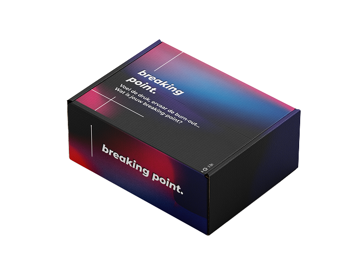
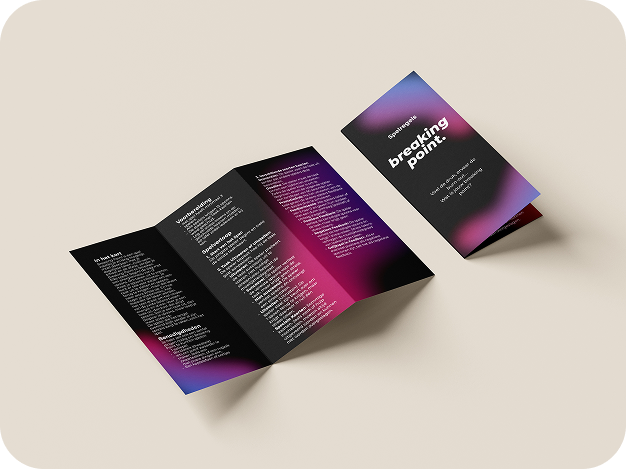
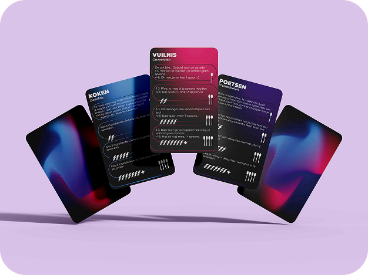

Back to projects
Back to projects
breaking point. - game design
“How can I design something that fosters empathy and raises awareness of student burnout among people in their social environment who have never experienced burnout themselves?”
Burnout is becoming increasingly common among students, yet its impact can be difficult to understand for those who have never experienced it themselves. The constant pressure to perform, combined with a lack of understanding from others, can make an already difficult situation even more isolating.
Breaking-Point is an interactive game designed to make the invisible impact of burnout tangible. Instead of simply explaining what burnout feels like, the game invites players to experience how limited energy and increasing stress can affect even the smallest everyday decisions.
The concept is inspired by Spoon Theory, a metaphor used to explain what it is like to live with limited amounts of energy. In Breaking-Point, players start with a limited supply of energy and have to decide how to spend it throughout the day. Studying, working and social activities all require energy, but so do seemingly simple tasks like doing laundry or cooking. As energy runs out and stress builds up, choices become increasingly difficult.
By translating these experiences into gameplay, Breaking-Point aims to create empathy and open up the conversation around burnout. The project shows that burnout is not simply about being tired or needing a break, but can influence every part of someone's daily life.

The Game

